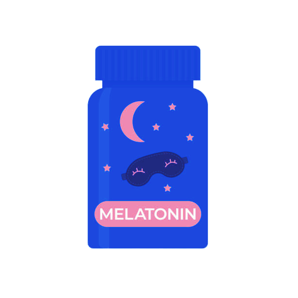

For optimal health, most adults should aim for 7 to 9 hours of sleep per night. This range is recommended by health experts because it allows the body and mind to undergo necessary restorative processes. During sleep, the body repairs tissues, strengthens the immune system, and consolidates memories, which are all vital for overall well-being. Insufficient sleep, on the other hand, has been linked to a higher risk of health issues such as heart disease, obesity, weakened immunity, and impaired cognitive function. It also impacts mood, productivity, and emotional resilience. By consistently getting enough sleep, individuals can enhance their physical health, mental clarity, and emotional balance, contributing to a better quality of life.